Одним зі способів використання інтегрального числення є визначення площ, обмежених кривими.
Спробуймо поетапно розібратися в цій темі.
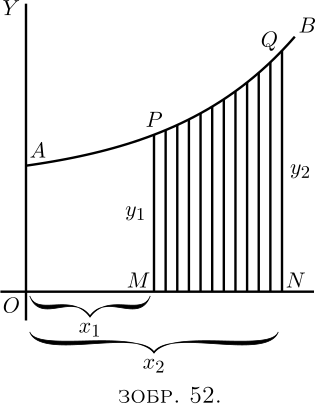
Нехай $AB$ (Зображення 52) — крива, рівняння якої нам відоме. Тобто $y$ в цій кривій є деякою відомою функцією від $x$. Розглянемо частину кривої від точки $P$ до точки $Q$.
Нехай з точки $P$ опущено перпендикуляр $PM$, а з точки $Q$ — інший перпендикуляр $QN$. Тоді назвемо абсциси $OM = x_1$ і $ON = x_2$, а ординати $PM = y_1$ і $QN = y_2$. Таким чином, ми позначили область $PQNM$, яка лежить під фрагментом $PQ$. Питання в тому, як ми можемо знайти площу цієї області?
Секрет розв'язання цієї задачі полягає в тому, щоб уявити площу як розділену на безліч тонких смуг, кожна з яких має ширину $dx$. Чим меншим ми беремо $dx$, тим більше їх буде між $x_1$ і $x_2$. Тоді вся площа явно дорівнює сумі площ усіх цих смуг. Тож наша справа полягатиме в тому, щоб знайти вираз для площі однієї такої тонкої смуги та інтегрувати його, щоб скласти усі смужки разом. Тепер подумайте про будь-яку зі смужок. Вона буде такою: обмежена між двома вертикальними сторонами, з плоским низом $dx$ і злегка зігнутим похилим верхом.
Припустимо, ми візьмемо її середню висоту як $y$; тоді, оскільки її ширина $dx$, її площа буде $y\, dx$. І оскільки ми можемо прийняти ширину якою завгодно малою, якщо ми візьмемо її достатньо малою, середня висота смуги буде такою ж, як і висота в середині смуги. Далі, позначимо невідоме значення всієї площі літерою $S$, від англ. Surface. Площа однієї смуги буде просто невеликою частиною всієї площі, і тому її можна назвати $dS$. Отже, ми можемо написати \[ \text{площа $1$ смуги} = dS = y · dx. \] Тоді, якщо скласти всі смуги, ми отримаємо \[ \text{загальна площа $S$} = \int dS = \int y\, dx. \]
Таким чином, знаходження $S$ залежить від того, чи зможемо ми проінтегрувати $y · dx$ для конкретного випадку, коли відомо, якою саме функцією від $x$ є $y$ .
Наприклад, якщо вам сказали, що для конкретної кривої $y = b + ax^2$, ви, безсумнівно, можете ввести це значення у вираз і сказати: тоді я маю знайти $\int (b + ax^2 )\, dx$.
Це все дуже добре, але невелике міркування покаже, що потрібно зробити щось ще. Оскільки площа, яку ми намагаємося знайти, не є площею під усією довжиною кривої, а лише площею, обмеженою зліва $PM$ і праворуч $QN$, ми повинні зробити щось, щоб визначити нашу область у цих "межах".
Це знайомить нас з новим поняттям, а саме з областю інтегрування. Ми припускаємо, що $x$ змінюється, але для поточної мети нам не потрібно жодного значення $x$ нижче $x_1$ (тобто $OM$) і жодного значення $x$ вище $x_2$ (тобто $ ON$). Коли інтеграл потрібно визначити таким чином між двома межами, ми називаємо нижче з двох значень нижньою границею, і верхнє значення верхньою границею. Будь-який обмежений таким чином інтеграл ми називаємо визначеним інтегралом, щоб відрізнити його від невизначеного інтегралу, на який не встановлено жодних обмежень.
У символах, які дають вказівки щодо інтегрування, границі позначаються вгорі та внизу відповідно від знака інтегрування. Таким чином інструкцію \[ \int_{x=x_1}^{x=x_2} y · dx \] буде прочитано як: знайти інтеграл $y · dx$ між нижньою границею $x_1$ і верхньою границею $x_2$ .
Іноді ця річ записується простіше: \[ \int^{x_2}_{x_1} y · dx. \] Добре, але як нам знайти інтеграл між границями, коли ми маємо ці інструкції?
Подивіться ще раз на Зображення 52. Припустімо, що ми можемо знайти площу під більшою частиною кривої від $A$ до $Q$, тобто від $x = 0$ до $x = x_2$, назвавши площу $AQNO$. Далі припустімо, що ми можемо знайти площу під меншим шматком від $A$ до $P$, тобто від $x = 0$ до $x = x_1$, а саме площу $APMO$. Тоді якби ми відняли меншу площу від більшої, мала б залишитись площа $PQNM$, яку ми й шукаємо. Тут ми і маємо підказку щодо того, як це робити: визначений інтеграл між двома границями є різницею між інтегралом, розрахованим для верхньої границі, та інтегралом, розрахованим для нижньої границі.
Отже, давайте продовжимо. Спочатку знайдемо невизначений інтеграл: \[ \int y\, dx, \] і, оскільки $y = b + ax^2$ є рівнянням кривої (Зображення 52), \[ \int (b + ax^2)\, dx \] є невизначеним інтегралом, який ми повинні знайти.
Виконуючи інтегрування за правилами, ми отримуємо \[ bx + \frac{a}{3} x^3 + C; \] і це буде вся область від $0$ до будь-якого значення $x$, яке ми можемо підставити.
Отже, більша площа до верхньої межі $x_2$ буде \[ bx_2 + \frac{a}{3} x_2^3 + C; \] а менша площа до нижньої межі $x_1$ буде \[ bx_1 + \frac{a}{3} x_1^3 + C. \]
Тепер віднімемо від більшого менше, і ми отримаємо для площі $S$ значення \[ \text{площа $S$} = b(x_2 - x_1) + \frac{a}{3}(x_2^ 3 - x_1^3). \]
Це відповідь, яку ми шукали. Наведемо деякі числові приклади. Припустімо, що $b = 10$, $a = 0.06$, $x_2 = 8$ і $x_1 = 6$. Тоді площа $S$ дорівнює \begin{gather*} 10(8 - 6) + \frac{0.06}{3} (8^3 - 6^3) \\ \begin{aligned} &= 20 + 0.02(512 - 216) \\ &= 20 + 0.02 × 296 \\ &= 20 + 5.92 \\ &= 25.92. \end{aligned} \end{gather*}
Наведімо тут символьне формулювання того, що ми з’ясували щодо границь: \[ \int^{x=x_2}_{x=x_1} y\, dx = y_2 - y_1, \] де $y_2$ — проінтегроване значення $y\, dx$, що відповідає $x_2$, і $y_1$, що відповідає $x_1$.
Будь-яке інтегрування між границями вимагає визначення різниці між двома значеннями. Також зауважте, що під час виконання віднімання додана константа $C$ зникла.
Приклади (1) Щоб ознайомитися з процесом, розглянемо випадок, відповідь на який ми знаємо заздалегідь. Знайдімо площу трикутника (Зображення 53), який має основу $x = 12$ і висоту $y = 4$. Ми заздалегідь знаємо, з очевидного вимірювання, що відповідь буде $24$.
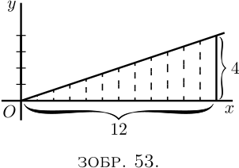
Тут ми маємо «криву» у вигляді похилої прямої, рівняння якої \[ y = \frac{x}{3}. \]
Площа, про яку йде мова, буде \[ \int^{x=12}_{x=0} y · dx = \int^{x=12}_{x=0} \frac{x}{3} · dx . \]
Інтегруючи $\dfrac{x}{3}\, dx$ (тут), і записавши значення інтеграла у квадратних дужках із позначеними зверху та знизу границями, отримаємо \begin{align*} \text{площа}\; &= \left[ \frac{1}{3} · \frac{1}{2} x^2 \right]^{x=12}_{x=0} + C \\ &= \left[ \frac{x^2}{6} \right]^{x=12}_{x=0} + C \\ &= \left[ \frac{12^2}{6} \right] - \left[ \frac{0^2}{6} \right] \\ &= \frac{144}{6} = 24.\quad Відповідь. \end{align*}
Давайте переконаємося в цьому досить дивовижному способі розрахунку, перевіривши його на простому прикладі. Візьміть папір у клітинку, бажано такий, що розлинений квадратиками розміром одна восьма або одна десята дюйма в кожну сторону. На цьому папері побудуйте графік рівняння \[ y = \frac{x}{3}. \]
Нанесені на графік значення будуть такими:
| $x$ | $0$ | $3$ | $6$ | $9$ | $12$ |
| $y$ | $0$ | $1$ | $2$ | $3$ | $4$ |
Графік наданий на Зображенні 54.
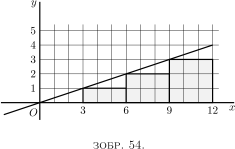
Тепер розрахуйте площу під кривою, порахувавши маленькі квадрати під лінією, від $x = 0$ до $x = 12$ справа. Є $18$ цілих квадратів і чотири трикутники, площа кожного з яких дорівнює $1\frac{1}{2}$ квадрати; або, загалом, $24$ квадрати. Отже, $24$ — це числове значення інтеграла $\dfrac{x}{3}\, dx$ між нижньою границею $x = 0$ і верхньою $x = 12$.
Для подальшої вправи покажіть, що значення того самого інтеграла між границями $x = 3$ і $x = 15$ дорівнює $36$.
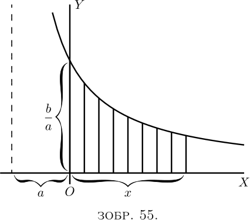
(2) Знайдіть площу у межах $x = x_1$ і $x = 0$ кривої $y = \dfrac{b}{x + a}$. \begin{align*} \text{Площа} &= \int^{x=x_1}_{x=0} y · dx = \int^{x=x_1}_{x=0} \frac{b}{x+a}\, dx \\ &= b \bigl[\log_\epsilon(x + a) \bigr]^{x_1} _{0} + C \\ &= b \bigl[\log_\epsilon(x_1 + a) - \log_\epsilon(0 + a)\bigr] \\ &= b \log_\epsilon \frac{x_1 + a}{a}.\quad Відповідь. \end{align*}
Примітка – Зверніть увагу, що при роботі з визначеними інтегралами константа $C$ завжди зникає у процесі віднімання.
Слід зазначити, що цей процес віднімання однієї частини від більшої, щоб знайти різницю, є насправді звичайною практикою. Як знайти площу плоского кільця (Зображення 56), зовнішній радіус якого дорівнює $r_2$, а внутрішній — $r_1$? Ви знаєте з, що площа зовнішнього кола дорівнює $\pi r_2^2$. Тоді ви знайдете площу внутрішнього кола, $\pi r_1^2$, потім ви віднімаєте останнє від першого та знайдете площу кільця $= \pi(r_2^2 - r_1^2)$, що можна записати як
\[ \pi(r_2 + r_1)(r_2 - r_1) \] $= \text{середня довжина окружності кільця} × \text{ширина кільця}$.
\[ \pi(r_2 + r_1)(r_2 - r_1) \] $= \text{середня довжина окружності кільця} × \text{ширина кільця}$.
(3) Ось ще один випадок – спадна крива. Знайдіть площу між $x = 0$ і $x = a$ під кривою (Зображення 57), рівняння якої має вигляд \begin{align*} y &= b\epsilon^{-x}. \\ \text{Площа} &= b\int^{x=a} _{x=0} \epsilon^{-x} · dx. \\ \end{align*} Інтегрування (тут) дає \begin{align*} &= b\left[-\epsilon^{-x}\right]^a _0 \\ &= b\bigl[-\epsilon^{-a} - (-\epsilon^{-0})\bigr] \\ &= b(1-\epsilon^{-a}). \end{align*}
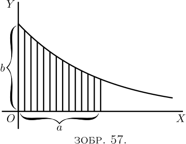
(4) Наступним прикладом візьмемо адіабатичну криву ідеального газу, рівняння якої $pv^n = c$, де $p$ означає тиск, $v$ — об’єм, а $n$ — має значення $1.42$ (Зображення 58).
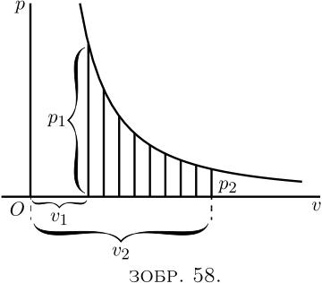
Знайдіть площу під кривою (яка є пропорційною роботі, виконаній під час раптового стиснення газу) від об’єму $v_2$ до об’єму $v_1$.
Тут ми маємо \begin{align*} \text{площа} &= \int^{v=v_2}_{v=v_1} cv^{-n} · dv \\ &= c\left[\frac{1 }{1-n} v^{1-n} \right]^{v_2} _{v_1} \\ &= c \frac{1}{1-n} (v_2^{1-n} - v_1^ {1-n}) \\ &= \frac{-c}{0.42}\left(\frac{1}{v_2^{0.42}} - \frac{1}{v_1^{0.42}}\right) . \end{align*}
Вправа.
Доведіть формулу, що площа $A$ кола радіуса $R$ дорівнює $\pi R^2$.
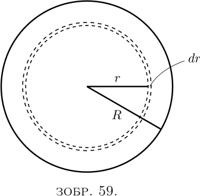
Розглянемо елементарну зону, або кільце поверхні (Зображення 59) шириною $dr$, що знаходиться на відстані $r$ від центру. Ми можемо вважати, що вся поверхня складається з таких вузьких зон, а вся площа $A$ буде просто інтегралом усіх таких елементарних зон від центру до краю, тобто інтегрованою від $r = 0$ до $r = R $.
Тож, ми маємо знайти вираз для елементарної площі $dA$ такої вузької зони. Уявіть це як смугу шириною $dr$ і довжиною, що дорівнює довжині кола радіусом $r$, тобто $2 \pi r$. Тоді ми маємо площу вузької зони \[ dA = 2 \pi r\, dr. \]
Отже, площа всього кола буде: \[ A = \int dA = \int^{r=R}_{r=0} 2 \pi r · dr = 2 \pi \int^{r=R} _{r=0} r · dr. \]
Тож, загальний інтеграл від $r · dr$ дорівнює $\frac{1}{2} r^2$. Отже, \begin{align*} A &= 2 \pi \bigl[\tfrac{1}{2} r^2 \bigr]^{r=R}_{r=0}; \\ або A &= 2 \pi \bigl[\tfrac{1}{2} R^2 - \tfrac{1}{2}(0)^2\bigr]; \\ звідки \; A &= \pi R^2. \end{align*}
Ще одна вправа.
Знайдімо середню ординату додатної частини кривої $y = x - x^2$, яка відображена на Зображенні 60. Щоб знайти середню ординату, нам потрібно знайти площу частини $OMN$, а потім розділити її на довжину основи $ON$. Але перш ніж ми зможемо знайти площу, нам треба визначити довжину основи, щоб знати, до якої межі ми маємо інтегрувати. При $N$ ордината $y$ має нульове значення; отже, ми повинні глянути рівняння та побачити, при яких значеннях $x$ $y$ становитиме $0$. Зрозуміло, що якщо $x$ дорівнює $0$, $y$ також буде $0$, тобто крива проходить через початок координат $O$; але також, якщо $x=1$, $y=0$, так що $x=1$ дає нам положення точки $N$.
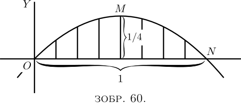
Отже, шукана площа становить \begin{align*} &= \int^{x=1}_{x=0} (x-x^2)\, dx \\ &= \left[\tfrac{1}{2} x^2 - \tfrac{1}{3} x^3 \right]^{1}_{0} \\ &= \left[\tfrac{1}{2} - \tfrac{1}{3} \right] - [0-0] \\ &= \tfrac{1}{6}. \end{align*}
Але довжина основи дорівнює $1$.
Тож, середня ордината кривої $= \frac{1}{6}$.
[Примітка – Це буде гарною і простою вправою з максимумів і мінімумів, щоб шляхом диференціювання знайти висоту максимальної ординати. Вона повинна бути більшою за середню.]
Середня ордината будь-якої кривої в діапазоні від $x= 0$ до $x = x_1$ визначається виразом \[ \text{середня $y$} = \frac{1}{x_1} \int ^{x=x_1}_{x=0} y · dx. \]
Таким же чином можна знайти площу поверхні твердого тіла обертання.
Приклад. Крива $y=x^2-5$ обертається навколо осі $x$. Знайдіть площу поверхні, утвореної кривою між $x=0$ і $x=6$.
Точка на кривій, ордината якої дорівнює $y$, описує окружність довжиною $2\pi y$, а відповідна цій точці тонка смужка поверхні шириною $dx$ має площу $2\pi y\, dx$. Загальна площа дорівнює
\begin{align*} 2\pi \int^{x=6}_{x=0} y\, dx &= 2\pi \int^{x=6}_{x=0} (x^2-5)\, dx = 2\pi \left[\frac{x^3}{3} - 5x\right]^6_0 \\ &= 6.28 × 42=263.76. \end{align*}
\begin{align*} 2\pi \int^{x=6}_{x=0} y\, dx &= 2\pi \int^{x=6}_{x=0} (x^2-5)\, dx = 2\pi \left[\frac{x^3}{3} - 5x\right]^6_0 \\ &= 6.28 × 42=263.76. \end{align*}
Коли рівняння межі області задано як функція відстані $r$ її точки від фіксованої точки $O$ (див. Зображення 61), що називається полюсом, і кута, який $r$ утворює з позитивним горизонтальним напрямком $OX$, щойно пояснений процес можна застосувати так само легко, з невеликими змінами. Замість смужки площі ми розглянемо малий трикутник $OAB$, де кут при $O$ дорівнює $d\theta$, і знайдемо суму всіх маленьких трикутників, які складають шукану площу.
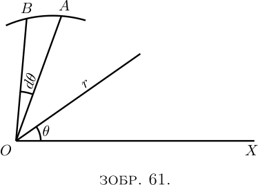
Площа такого маленького трикутника становить приблизно $\dfrac{AB}{2}×r$ або $\dfrac{r\, d\theta}{2}×r$. Отже, частина площі між кривою та двома положеннями $r$, що відповідають кутам $\theta_1$ і $\theta_2$, визначається як \[ \tfrac{1}{2} \int^{\theta= \theta_2}_{\theta=\theta_1} r^2\, d\theta. \]
Приклади (1) Знайдіть площу сектора в $1$ радіан в колі радіусом $a$ дюймів.
Полярне рівняння кола, очевидно, $r=a$. Площа дорівнює \[ \tfrac{1}{2} \int^{\theta=\theta_2}_{\theta=\theta_1} a^2\, d\theta = \frac{a^2}{2} \int^{\theta=1}_{\theta=0} d\theta = \frac{a^2}{2}. \]
(2) Знайдіть площу першої чверті кривої (відомої як «равлик Паскаля»), полярне рівняння якої $r=a(1+\cos \theta)$. \begin{align*} \text{Площа} &= \tfrac{1}{2} \int^{\theta=\frac{\pi}{2}}_{\theta=0} a^2(1 +\cos \theta)^2\, d\theta \\ &= \frac{a^2}{2} \int^{\theta=\frac{\pi}{2}}_{\theta=0 } (1+2 \cos \theta + \cos^2 \theta)\, d\theta \\ &= \frac{a^2}{2} \left[\theta + 2 \sin \theta + \frac {\theta}{2} + \frac{\sin 2 \theta}{4} \right]^{\frac{\pi}{2}}_{0} \\ &= \frac{a^2( 3\pi+8)}{8}. \end{align*}
Те, що ми зробили з площею невеликої смужки поверхні, ми, звичайно, можемо так само легко зробити з об’ємом невеликої смужки тіла. Ми можемо скласти всі маленькі смужки, які утворюють загальне тіло, і знайти його об’єм, так само, як ми склали всі маленькі смужки, з яких складається площа, щоб знайти кінцеву площу фігури, з якою працюємо.
Приклади (1) Знайдіть об’єм кулі радіуса $r$.
Тонка сферична оболонка має об'єм $4\pi x^2\, dx$ (див. Зображення 59). Підсумовуючи всі концентричні оболонки (концентрична оболонка — послідовний сферичний шар навколо центру сфери), які утворюють сферу, ми маємо
\[ \text{об'єм сфери} = \int^{x=r}_{x=0} 4\pi x^2\ , dx = 4\pi \left[\frac{x^3}{3} \right]^r_0 = \tfrac{4}{3} \pi r^3. \]
\[ \text{об'єм сфери} = \int^{x=r}_{x=0} 4\pi x^2\ , dx = 4\pi \left[\frac{x^3}{3} \right]^r_0 = \tfrac{4}{3} \pi r^3. \]
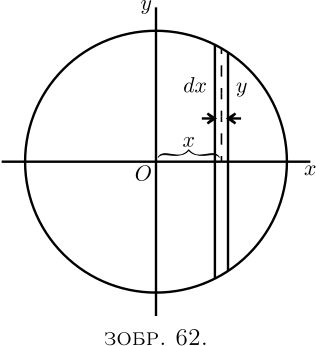
Ми також могли зробити наступним чином: розріз сфери товщиною $dx$ має об’єм $\pi y^2\, dx$ (див. Зображення 62). Також $x$ і $y$ пов’язані виразом \[ y^2 = r^2 - x^2. \]
\begin{align*} Отже \; \text{об'єм сфери} &= 2 \int^{x=r}_{x=0} \pi(r^2-x^2)\, dx \\ &= 2 \pi \left[ \int^ {x=r}_{x=0} r^2\, dx - \int^{x=r}_{x=0} x^2\, dx \right] \\ &= 2 \pi \left [r^2x - \frac{x^3}{3} \right]^r_0 = \frac{4\pi}{3} r^3. \end{align*}
\begin{align*} Отже \; \text{об'єм сфери} &= 2 \int^{x=r}_{x=0} \pi(r^2-x^2)\, dx \\ &= 2 \pi \left[ \int^ {x=r}_{x=0} r^2\, dx - \int^{x=r}_{x=0} x^2\, dx \right] \\ &= 2 \pi \left [r^2x - \frac{x^3}{3} \right]^r_0 = \frac{4\pi}{3} r^3. \end{align*}
(2) Знайдіть об’єм твердого тіла, утвореного обертанням кривої $y^2=6x$ навколо осі $x$ між $x=0$ і $x=4$.
Об’єм смужки твердого тіла дорівнює $\pi y^2\, dx$. \begin{align*} Отже \; \text{об'єм} &= \int^{x=4}_{x=0} \pi y^2\, dx = 6\pi \int^{x=4}_{x=0} x\, dx \\ &= 6\pi \left[ \frac{x^2}{2} \right]^4_0 = 48\pi = 150.8. \end{align*}
У деяких розділах фізики, зокрема при вивченні змінного електричного струму, необхідно вміти обчислювати середнє квадратичне змінної величини. Під «середнім квадратичним» мається на увазі квадратний корінь із середнього квадратів усіх значень у розглянутих межах. Інша назва середнього квадратичного будь-якої величини — це її "кореневе середньоквадратичне". Якщо $y$ — це функція, що розглядається, а середнє квадратичне має бути взято між межами $x=0$ і $x=l$, тоді середнє квадратичне виражається як \[ \sqrt[2] {\frac{1}{l} \int^l_0 y^2\, dx}. \]
Приклади (1) Знайти середнє квадратичне функції $y=ax$ (Зображення 63).
Тут інтеграл це $\int^l_0 a^2 x^2\, dx$, що дорівнює $\frac{1}{3} a^2 l^3$.
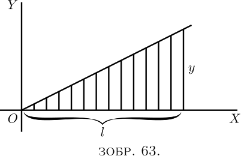
Поділивши на $l$ і взявши квадратний корінь, ми отримаємо \[ \text{середнє квадратичне} = \frac{1}{\sqrt 3}\, al. \]
Середнє арифметичне тут дорівнює $\frac{1}{2}al$; а відношення середнього квадратичного до середнього арифметичного становить $\dfrac{2}{\sqrt 3}=1.155$.
(2) Знайти середнє квадратичне функції $y=x^a$.
Інтеграл дорівнює $\int^{x=l}_{x=0} x^{2a}\, dx$, тобто $\dfrac{l^{2a+1}}{2a+1}$. Отже, середнє квадратичне = $\sqrt[2]{\dfrac{l^{2a}}{2a+1}}$.
(3) Знайти середнє квадратичне функції $y=a^{\frac{x}{2}}$.
Інтеграл дорівнює $\int^{x=l}_{x=0} (a^{\frac{x}{2}})^2\, dx$, тобто $\int^{x=l} _{x=0} a^x\, dx$ або $\left[ \frac{a^x}{\log_\epsilon a} \right]^{x=l}_{x=0}$, що дорівнює $\dfrac{a^l-1}{\log_\epsilon a}$.
Отже, середнє квадратичне дорівнює $\sqrt[2] {\dfrac{a^l - 1}{l \log_\epsilon a}}$.
(2) Знайдіть площу параболи $y=2a\sqrt x$ між $x=0$ і $x=a$. Покажіть, що вона становить дві третини прямокутника від граничної ординати параболи та її абсциси.
(3) Знайдіть площу додатної частини синусоїди та її середню ординату.
(4) Знайдіть площу додатної частини кривої $y=\sin^2 x$ і її середню ординату.
(5) Знайдіть площу між двома гілками кривої $y=x^2 ± x^{\frac{5}{2}}$ від $x=0$ до $x=1$, а також площу позитивної частини нижньої гілки кривої (див. Зображення 30).
(6) Знайдіть об’єм конуса з радіусом основи $r$ і висотою $h$.
(7) Знайдіть площу кривої $y=x^3-\log_\epsilon x$ між $x=0$ і $x=1$.
(8) Знайдіть об’єм, утворений кривою $y=\sqrt{1+x^2}$, коли вона обертається навколо осі $x$, між $x=0$ і $x=4$.
(9) Знайдіть об’єм, створений синусоїдальною кривою, що обертається навколо осі $x$. Знайдіть також площу його поверхні.
(10) Знайдіть площу, утворену частиною кривої $xy=a$, що знаходиться між $x=1$ і $x = a$. Знайдіть середню ординату у цих межах.
(11) Покажіть, що середнє квадратичне функції $y=\sin x$ між $0$ і $\pi$ радіан дорівнює $\dfrac{\sqrt2}{2}$. Знайдіть також середнє арифметичне тієї ж функції в тих самих межах і покажіть, що їх відношення $=1.11$.
(12) Знайдіть середнє арифметичне та квадратичне функції $x^2+3x+2$ від $x=0$ до $x=3$.
(13) Знайдіть середнє квадратичне та середнє арифметичне функції $y=A_1 \sin x + A_1 \sin 3x$.
(14) Певна крива має рівняння $y=3.42\epsilon^{0.21x}$. Знайдіть площу між кривою та віссю $x$ від ординати на $x=2$ до ординати на $x=8$. Знайдіть також висоту середньої ординати кривої між цими точками.
(15) Покажіть, що радіус кола, площа якого вдвічі перевищує площу полярної діаграми, дорівнює середньому квадратичному всіх значень $r$ для цієї полярної діаграми.
(16) Знайдіть об’єм, утворений кривою $y=±\dfrac{x}{6}\sqrt{x(10-x)}$, що обертається навколо осі $x$.
(1) $\text{Площа} = 60$; $\text{середня ордината} = 10$.
(2) $\text{Площа} = \frac{2}{3}$ від $a × 2a \sqrt{a}$.
(3) $\text{Площа} = 2$; $\text{середня ордината} = \dfrac{2}{\pi} = 0.637$.
(4) $\text{Площа} = 1.57$; $\text{середня ордината} = 0.5$.
(5) $0.572$, $0.0476$.
(6) $\text{Об'єм} = \pi r^2 \dfrac{h}{3}$.
(7) $1.25$.
(8) $79.4$.
(9) $\text{Об'єм} = 4.9348$; $\text{площа поверхні} = 12.57$ (від $0$ до $\pi$).
(10) $a\log_\epsilon a$, $\dfrac{a}{a - 1} \log_\epsilon a$.
(12) $\text{Середнє арифметичне} = 9.5$; $\text{середнє квадратичне} = 10.85$.
(13) $\text{Середнє квадратичне} = \dfrac{1}{\sqrt{2}} \sqrt{A_1^2 + A_3^2}$; $\text{середнє арифметичне} = 0$. Перше має дещо складний інтеграл, і його можна сформулювати так: за визначенням квадратичне середнє буде \[ \sqrt{\dfrac{1}{2\pi} \int_0^{2\pi} (A_1 \sin x + A_3 \sin 3x)^2\, dx}. \] Інтегрування \[ \int (A_1^2 \sin^2 x + 2A_1 A_3 \sin x \sin 3x + A_3^2 \sin^2 3x)\, dx \] легше виконати, якщо замість $\sin^2 x$ ми запишемо \[ \dfrac{1 - \cos 2x}{2}. \] Для $2\sin x \sin 3x$ ми пишемо $\cos 2x - \cos 4x$; і, для $\sin^2 3x$, \[ \dfrac{1 - \cos 6x}{2}. \] Роблячи ці заміни та інтегруючи, ми отримуємо (див. тут)
\[ \dfrac{A_1^2}{2} \left( x - \dfrac{\sin 2x}{2} \right) + A_1 A_3 \left( \dfrac{\sin 2x}{2} - \dfrac {\sin 4x}{4} \right) + \dfrac{A_3^2}{2} \left( x - \dfrac{\sin 6x}{6} \right) \]
\[ \dfrac{A_1^2}{2} \left( x - \dfrac{\sin 2x}{2} \right) + A_1 A_3 \left( \dfrac{\sin 2x}{2} - \dfrac {\sin 4x}{4} \right) + \dfrac{A_3^2}{2} \left( x - \dfrac{\sin 6x}{6} \right). \]
На нижній межі підстановка $0$ для $x$ призводить до того, що все це зникає, тоді як на верхній межі підстановка $2\pi$ для $x$ дає $A_1^2 \pi + A_3^2 \pi $. І звідси випливає відповідь.
(14) Площа становить $62.6$ квадратних одиниць. Середня ордината становить $10.42$.
(16) $436.3$. (Це тверде тіло має форму груші.)